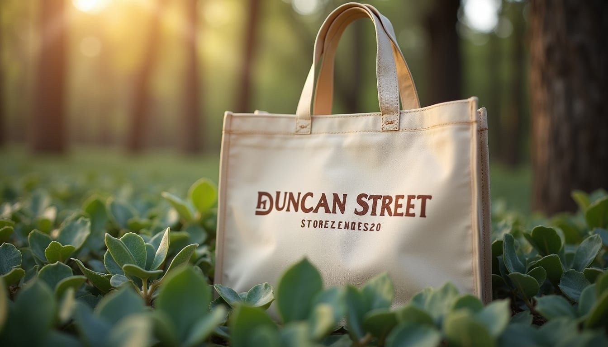
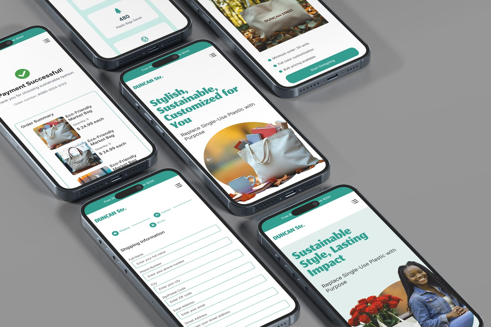
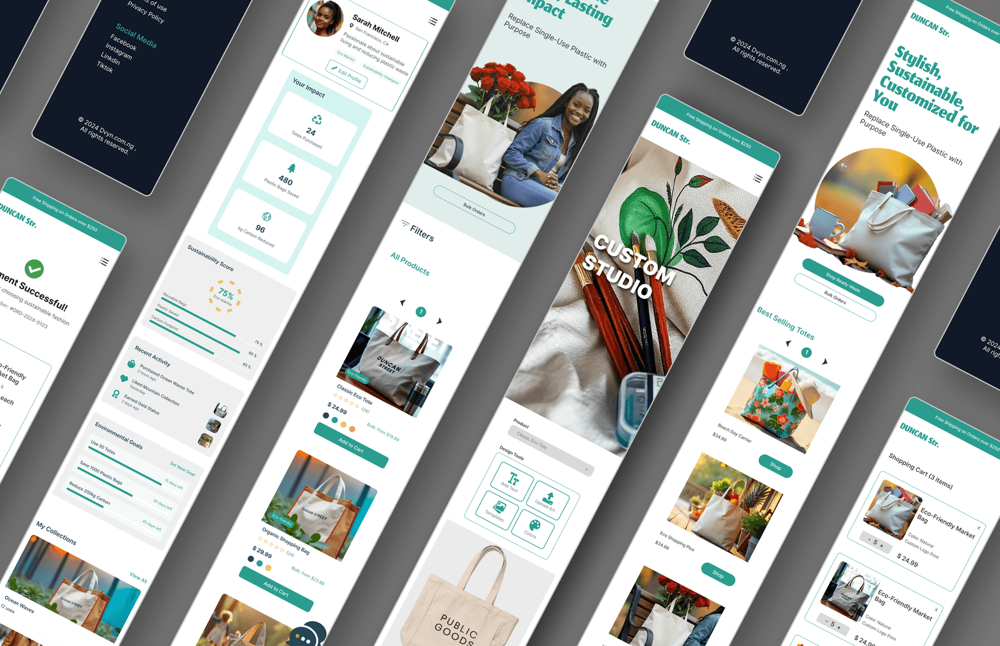
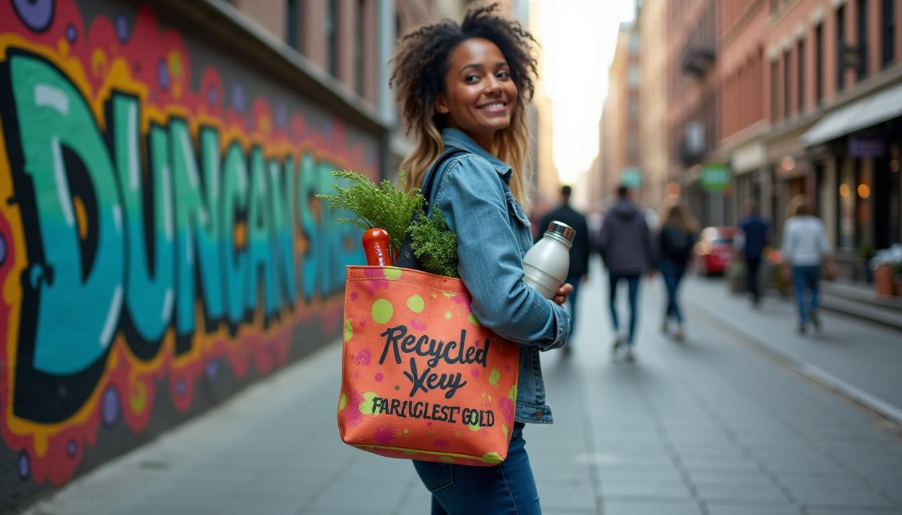
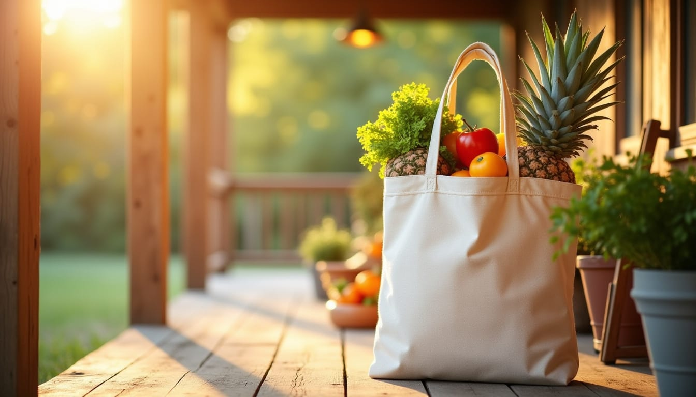
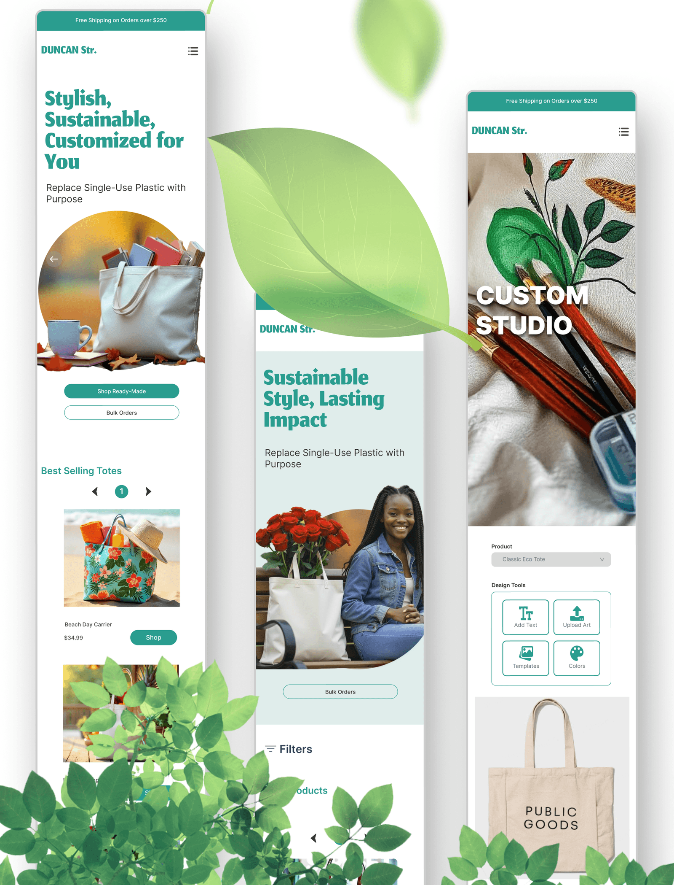

Product Consulting & Design · 2025
Duncan Street
A sustainable tote-bag brand on a mission to replace single-use plastic with purpose - and the custom e-commerce store built to sell it.
As consultant product manager I set the direction and designed the storefront end to end - identity, the shop, the custom studio and a frictionless checkout - proving it could work with AI-built designs, then handed it to the client's developer to build.

Overview
A tote bag is a small thing to design and a big thing to make matter. Duncan Street turns a reusable bag into a statement - and makes buying one feel less like a purchase and more like joining a movement.
The brief was two jobs in one: a brand people would actually want to carry, and a store that converts. I built the identity around nature and a single promise - "replace single-use plastic with purpose" - then designed an e-commerce experience that educates as it sells, structured around three ways to buy: shop ready-made, order in bulk, or design your own. I proved the direction with AI-built designs, then handed everything to the client's developer to build.
The product
A storefront
with a mission.
The same sustainable story, screen to screen - from the hero, through a custom studio, to a "Payment Successful" that thanks you for choosing sustainable fashion.

The system
One cohesive system.
Every screen - listings, product, custom studio, cart, profile and confirmation - shares one calm, teal-and-leaf language, so the experience stays cohesive from first tap to checkout.

Product decisions
Designed to convert, built to educate.
Three ways to buy
A simplified architecture around three pillars - shop ready-made totes, order in bulk, or open the custom studio.
A custom design studio
Add text, upload art, choose templates and colours to design a one-off tote - turning buyers into makers.
A frictionless checkout
A streamlined four-step flow - Cart → Shipping → Payment → Confirmation - with auto-fill, live validation and clear progress.
Built for bulk
Tiered pricing for 50+ units with full-colour customization, aimed at event planners and corporate buyers.
An eco-impact dashboard
The profile gamifies sustainability - plastic bags saved, carbon reduced, and goals like "use 50 totes."
Flexible shipping
Free Standard, Express and Next-Day options, each with real-time cost updates at checkout.
The brand
An identity rooted in nature.
Canvas, daylight and greenery - product photography that puts the totes in forests and on city streets, so sustainability reads as lifestyle, not lecture.


Problem · Process · Craft
Prove the brand can work - then hand it over.
Duncan Street's owner had a sustainable-tote idea but needed a direction: what to build, what was realistic, and proof it could actually sell. My job was to chart that path in two months and set his team up to ship it - so I came in as a consultant product manager, then designed it to show the vision could work.
Set the direction
As consultant PM I defined the strategy - a brand people would want to carry and a store that converts - structured around three ways to buy: shop, bulk, and design-your-own.
Advise the owner
I laid out clearly what he should do and what was achievable - scope, priorities and the path to launch - so the big decisions were his, and well-informed.
Prove it with design
To show it could work, I designed the whole thing myself - the identity, the e-commerce experience, a custom studio, a frictionless checkout and an eco-impact dashboard.
Hand it off
I handed the complete direction and designs to the client and his developer to build from - a clean, confident starting point instead of a blank page.
The result
A brand you'd actually carry.
A complete brand and store - an identity, a product line and an e-commerce experience that makes choosing reusable feel effortless, and even a little fun. Designed and built with AI.
